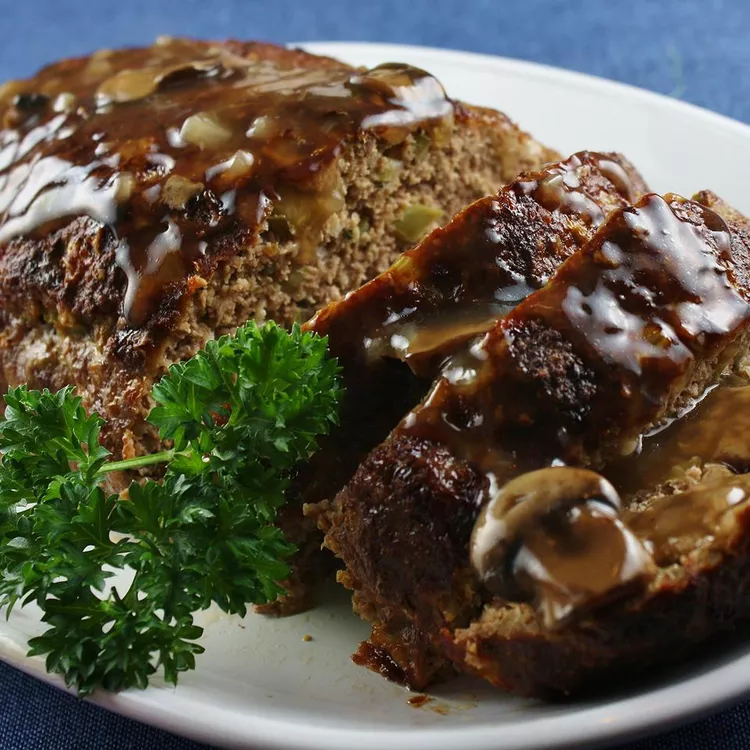

Tennessee Meatloaf

4.6 (167)
138 REVIEWS 22 PHOTOS
I think this meatloaf recipe is close to my grandmother's meatloaf
in flavor and texture. "Nanaw" Rowan made the most delicious
meatloaf in the state. When she passed away, she didn't leave me her
recipe, but she left me the desire to recreate it, and I think this
is it! Don't let the number of ingredients discourage you — it's
part of the magic of creating a masterpiece.
Submitted byLeigh Ann Rowan Kiraly
Updated on July 17, 2024
Ingredients
Brown Sugar Glaze:
- ½ cup ketchup
- ¼ cup brown sugar
- 2 tablespoons cider vinegar
Meatloaf:
- cooking spray
- 1 onion, chopped
- ½ green bell pepper, chopped
- ⅔ cup quick cooking oats
- ½ cup milk
- 2 large eggs, lightly beaten
- 2 cloves garlic, minced
- 2 teaspoons prepared mustard
- 2 teaspoons Worcestershire sauce
- 1 teaspoon dried thyme
- 1 teaspoon seasoned salt
- ½ teaspoon ground black pepper
- ½ teaspoon hot pepper sauce (such as Tabasco)
- 1 pound ground beef
- ½ pound ground pork
- ½ pound ground veal
Directions
-
Make the glaze: Mix ketchup, brown sugar, and cider
vinegar together in a bowl until well combined.
-
Make the meatloaf: Preheat the oven to 350 degrees F
(175 degrees C). Spray two 9x5-inch loaf pans with
cooking spray or line with aluminum foil for easier
cleanup.
-
Combine onion and bell pepper in a microwave-safe
container. Cover and microwave until softened, 1 to 2
minutes. Set aside to cool.
-
Mix oats, milk, eggs, garlic, mustard, Worcestershire
sauce, thyme, seasoned salt, black pepper, and hot sauce
together in a large bowl until well combined. Stir in
cooked onion and bell pepper. Add ground beef, pork, and
veal. With gloved hands, work all ingredients together
until completely mixed and uniform.
-
Pat 1/2 of the meatloaf mixture into each prepared loaf
pan. Brush each loaf with 1/4 of the glaze; set
remaining glaze aside.
-
Bake in the preheated oven for 50 minutes. Remove the
pans from the oven and carefully drain the fat. Brush
remaining glaze over loaves, then return to the oven and
bake for 10 more minutes. An instant-read thermometer
inserted into the center should read at least 160
degrees F (70 degrees C).
-
Remove from the oven and let stand for 15 minutes before
slicing.
SAVE
PRINT
I MADE IT